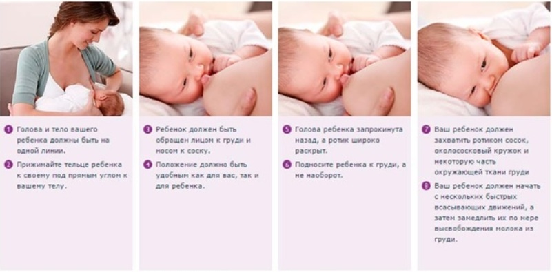
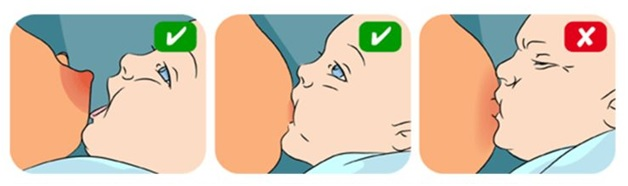
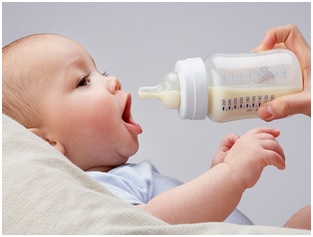

Техника грудного кормления
Итак, как же правильно кормить ребенка грудью?
Перед кормлением грудью необходимо прочистить носовые ходы ребёнка от слизи, сменить ему подгузник, при необходимости переодеть, чтобы малыш мог спокойно уснуть после кормления. Прежде, чем дать ребёнку грудь, следует сцедить первые капли молока, которые могут быть инфицированы.
О преимуществах грудного вскармливания мы говорили в предыдущей статье. Сейчас подробнее остановимся на технике грудного кормления.
В первые несколько дней после родов мать кормит ребёнка обычно лёжа на боку, а после того, как ей разрешат вставать,‒ сидя. Удобнее всего кормить, сидя на стуле или кресле с высокой спинкой, о которую можно облокотиться, поставив одну ногу на невысокую (20‒30 см от пола) скамеечку.
Обычно перед кормлением ребёнок становится беспокойным, кричит и, приложенный к груди, широко открывает рот и самостоятельно захватывает сосок губами. Если же этого не происходит, то можно поводить соском по губам малыша и, когда он откроет рот, аккуратно вложить в него сосок. Необходимо добиться того, чтобы ребёнок не только хорошо захватывал сосок губами, но и плотно припадал к околососковому кружку ‒ только в этом случае он сможет эффективно высасывать молоко. Надо постоянно следить за тем, чтобы грудь не закрывала носовые ходы малыша и не мешала ему дышать, для чего её необходимо поддерживать рукой.
Как правило, ребёнка кормят из одной груди и лишь на следующее кормление прикладывают к другой. Время кормления не должно превышать 20 мин. Во время кормления целесообразно несколько раз менять положение ребёнка. Это уменьшает травматизацию одного и того же участка соска и риск образования трещин.
Если содержимого одной груди не хватает малышу, то после полного её опорожнения ребёнка следует приложить к другой груди, остатки молока в которой после окончания кормления уже не сцеживают. К ней же в первую очередь прикладывают малыша при следующем кормлении. Точно так же поступают при кормлении близнецов.
Здоровый ребёнок, насытившись, сам отстраняется от груди. Однако встречаются дети, которые активно сосут лишь первые 3‒5 мин, а затем засыпают, не выпуская сосок изо рта. Это может стать причиной образования на сосках трещин. Во время кормления таких детей необходимо стимулировать их сосательный рефлекс поглаживанием кожи вокруг рта, в области щёк, вдоль носогубных складок. После окончания кормления мать аккуратно, без усилия вынимает сосок, стараясь не травмировать его. В том случае, если сделать это не удаётся сразу, можно на короткое время закрыть малышу носик ‒ ребёнок тотчас откроет рот, и сосок высвободится.
С целью профилактики застоя молока, предшествующего обычно возникновению мастита, после каждого кормления необходимо сцедить остатки молока из груди. Для этого имеются специальные молокоотсосы. Однако не всегда даже качественным молокоотсосом получается сцедить все молоко. А иногда процесс сцеживания молокоотсосом достаточно болезненный. Тогда женщина сцеживает молоко вручную. Для этого женщина захватывает сосок и околососковый кружок большим и указательным пальцами и лёгкими движениями сцеживает молоко в прокипячённую посуду. Не следует при этом делать энергичных движений. Можно сцеживать и двумя руками: большой и указательный пальцы обеих рук приставить к области околососкового кружка и производить лёгкие ритмичные движения сверху вниз в сторону соска, не отнимая пальцев от железы. Сцеживание производят не более 15—20 мин, пока молоко течёт струйкой. Не зависимо от того, как сцеживается молоко, в ручную или молокоотсосом, обязательно нужно вымыть руки!

РЕЖИМ КОРМЛЕНИЯ
В первые месяцы жизни малыша прикладывают к груди через 3-3,5 часа в том числе и в ночное время. К 4 месяцу режим кормления остается неизменным, но уже с 6,5-часовым ночным перерывом. Ослабленных, маловесных детей, у которых сосательная активность значительно снижена, в течение 1-го месяца жизни можно кормить чаще. Начиная с 5-го месяца и до конца 1-го года малыша кормят 5 раз в сутки с 4-часовыми интервалами.
Соблюдение такого режима питания очень важно для нормальной деятельности желудочно-кишечного тракта ребёнка, поскольку здесь учтено и время, необходимое на переваривание пищи, и время на отдых. Однако в течение суток пищевая активность малыша, как правило, неодинакова. Так, после ночного перерыва ребёнок обычно высасывает больше молока, чем при следующих кормлениях. Определённые различия в объёмах высасываемого молока отмечаются и в остальные кормления. В настоящее время вместо строгого (по часам) соблюдения режима рекомендуется способ частично свободного вскармливания, при котором допускаются отклонения до 30 мин в ту или другую сторону от определённых часов кормлений, а разовый объём пищи колеблется в пределах 20% от среднего. Последнее необходимо учитывать, если ребёнка кормят и сцеженным грудным молоком или смесью. В этом случае в бутылочку наливают на 20‒30 мл молока или смеси больше, чем требуется. В какое-то кормление малыш высосет весь объём, в другое ‒ нет; в целом же за день он получит необходимое количество пищи.
Контрольные кормления проводятся для определения количества молока, высасываемого ребёнком из груди за одно кормление. Непосредственно перед кормлением малышу следует сменить подгузник, при необходимости переодеть и взвесить. По окончании кормления его взвешивают повторно. Разница между результатами второго и первого взвешиваний в граммах равна объёму материнского молока в миллилитрах.
Поскольку в различные кормления ребёнок высасывает из груди неодинаковое количество молока, контрольные взвешивания целесообразно проводить в течение суток при всех кормлениях.
СУТОЧНАЯ ПОТРЕБНОСТЬ РЕБЁНКА В ПИЩЕ
Суточный объём пищи в миллилитрах, необходимый здоровому доношенному ребёнку со средней массой тела при рождении 3300‒3700 г, составляет в возрасте от 10 дней до 2 месяцев 1/5 массы тела в граммах (600‒800 мл), от 2 до 4 месяцев ‒ 1/6 массы тела (800‒1000 мл), от 4 до 6 месяцев ‒ 1/7 массы тела (900 ‒ 1000 мл), от 6 до 9 месяцев ‒ 1/8 массы тела (1000‒1100 мл) и к концу 1-го года жизни ‒ 1/8‒1/9 массы тела (1000 ‒ 1200 мл).
Докорм проводится при недостатке материнского молока (гипогалактии). В качестве докорма используют детские молочные смеси, которые даются из ложечки или из бутылочки через соску только после грудного кормления. Если сначала давать докорм, то малыш, легко высосав его, откажется от груди, поскольку высасывать молоко из неё значительно труднее. В свою очередь это усугубит тяжесть гипогалактии у матери и быстро приведёт к полному прекращению секреции молока.
Для определения количества докорма с помощью контрольного взвешивания устанавливают количество молока, которое ребёнок высасывает из груди. Зная суточную потребность ребёнка в пище и необходимое количество кормлений, рассчитывают требуемый объём пищи на одно кормление. Из этой величины при каждом кормлении вычитают объём молока, высосанный ребёнком из груди, и получают необходимый объём докорма.
Когда докорма требуется немного, его можно давать после всех или нескольких грудных кормлений, причём лучше из чайной ложки. Если же количество докорма сравнительно велико (например, 1/3‒1/2 общего суточного объёма пищи), то на несколько кормлений можно в полном объёме использовать только докорм, оставив в то же время не менее 3 грудных кормлений, чтобы предотвратить полное исчезновение лактации. В этом случае малыша докармливают из бутылочки через соску. Чтобы ребёнок не отказался от груди, в соске следует проделать несколько таких маленьких отверстий (их делают тонкой швейной иглой, нагретой на огне), чтобы молоко вытекало из них каплями, а не струйками. При кормлении из бутылочки необходимо постоянно следить за тем, чтобы её содержимое полностью заполняло соску и горлышко бутылочки. В противном случае вместе с молоком или смесью малыш будет подсасывать воздух, что обычно приводит к срыгиванию и даже рвоте.